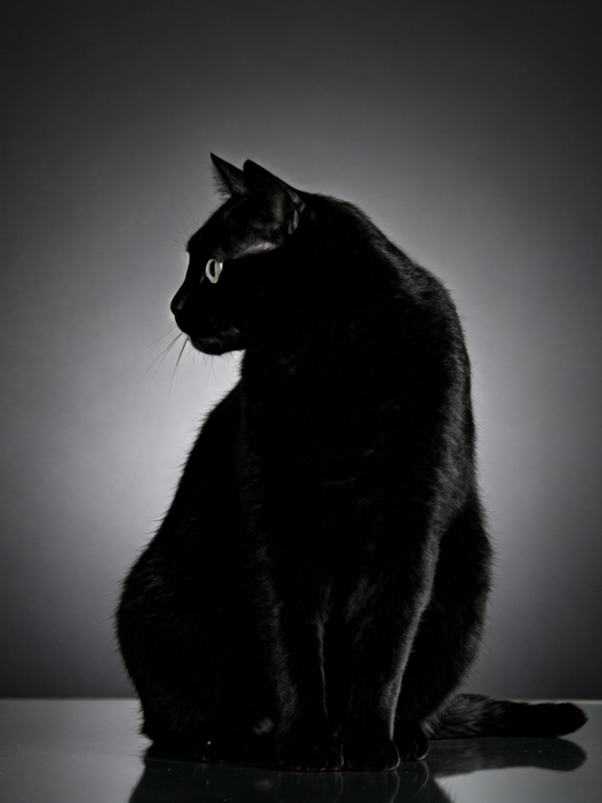

毛毛，本站唯一在编的猫员工，职位是镇宅兼吃穷饲养员。纯黑，十二斤，已绝育的公猫——体重账面不算轻盈，但他本人坚持那只是"毛蓬"。
他的日常极其规律：睁眼、干饭、找人拍屁股、继续睡。对外社交原则是谁给吃的就跟谁走，原则性约等于零；但对陌生人，他又怂得出奇——十二斤的块头，胆子大概只有十二克。
沙发、床、衣柜顶、键盘（尤其主人正在打字的时候），都是他的打卡点位。想拍到一张他睁着眼的清晰照片极其困难——本页这张侧身回望，已经是近期最好的珍稀素材，拍摄耗时约等于拍一组野生雪豹。
在"拍屁股"这件事上，毛毛是全家人意志最坚定的支持者。只要手往那个方向一靠，立刻尾巴竖起、后躯上翘，喉咙里的呼噜声直接拉满，一副"请开始你的表演"的表情。拍到兴起时，他会自己调整角度，配合度满分。
毛毛有点傻傻的，社交信条只有一条——谁给吃的就跟谁走。饭碗面前没有立场，零食面前没有尊严。家里谁藏了零食他心里门儿清，但从不揭发，只负责提前蹲点，用眼神进行无声的谈判。
十二斤的块头，胆子大概只有十二克。家里来陌生人，秒速消失；来陌生猫，同样秒速消失——目的地固定为床底或衣柜深处。以他的体格完成床底入驻时那套"液压变形"动作，值得逐帧欣赏：收耳、压头、然后像倒进缝隙里一样消失。
家里曾领养过一只流浪橘猫，名叫元宝。元宝年轻气盛、不懂规矩，直接用了毛毛的猫砂盆——这对毛毛来说无异于主权沦陷。他受到巨大冲击，吓得一整天没敢拉屎、没敢吃饭，蹲在衣柜顶上全程俯瞰局势，眼神里写满了委屈与震惊。后来元宝另有了安排，猫砂盆主权顺利回归，毛毛才慢慢恢复正常作息。此事至今仍是饲养员家的经典谈资。